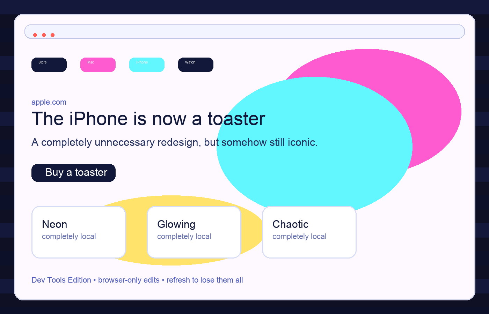

What I changed
I edited the hero text to read, “The iPhone is now a toaster,” and I adjusted the background, text color, and font size so the page looked bright, playful, and unmistakably vandalized.
The screenshot below shows the modified Apple homepage with a neon, over-the-top makeover applied locally in the browser.
